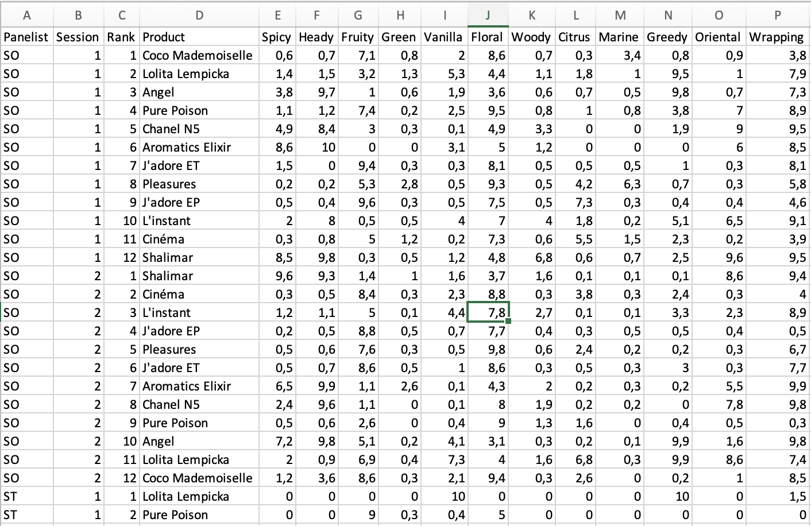
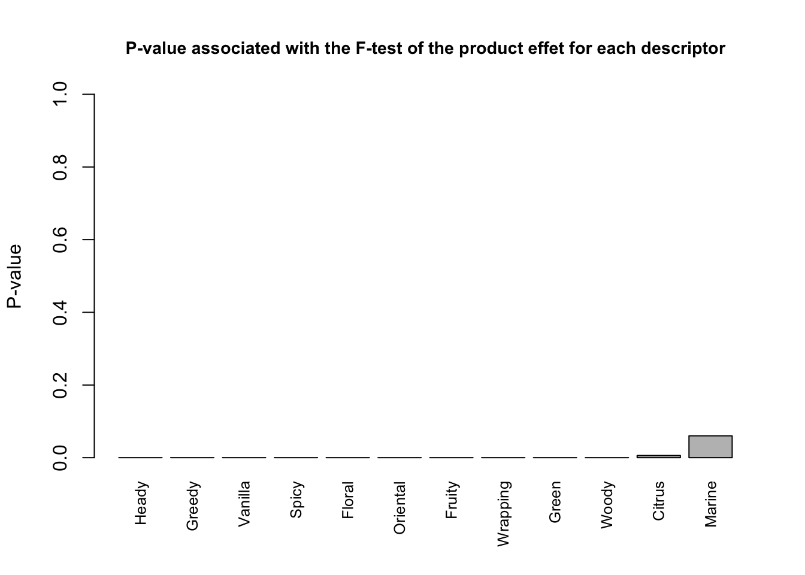
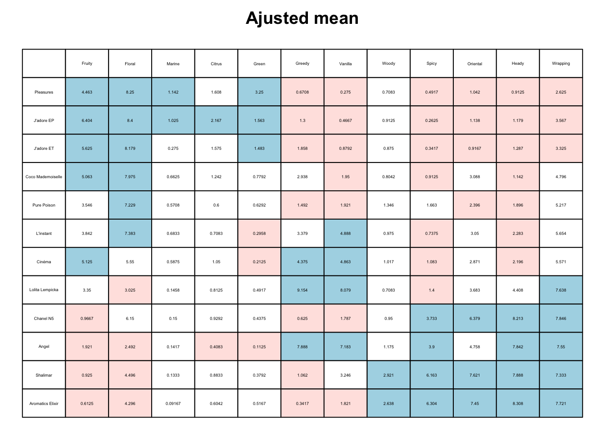
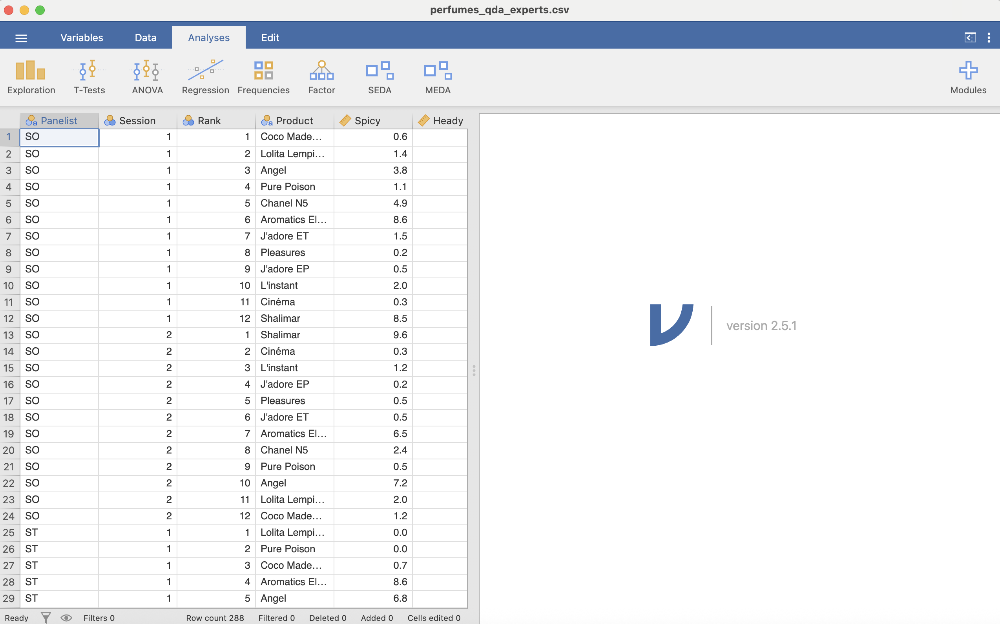
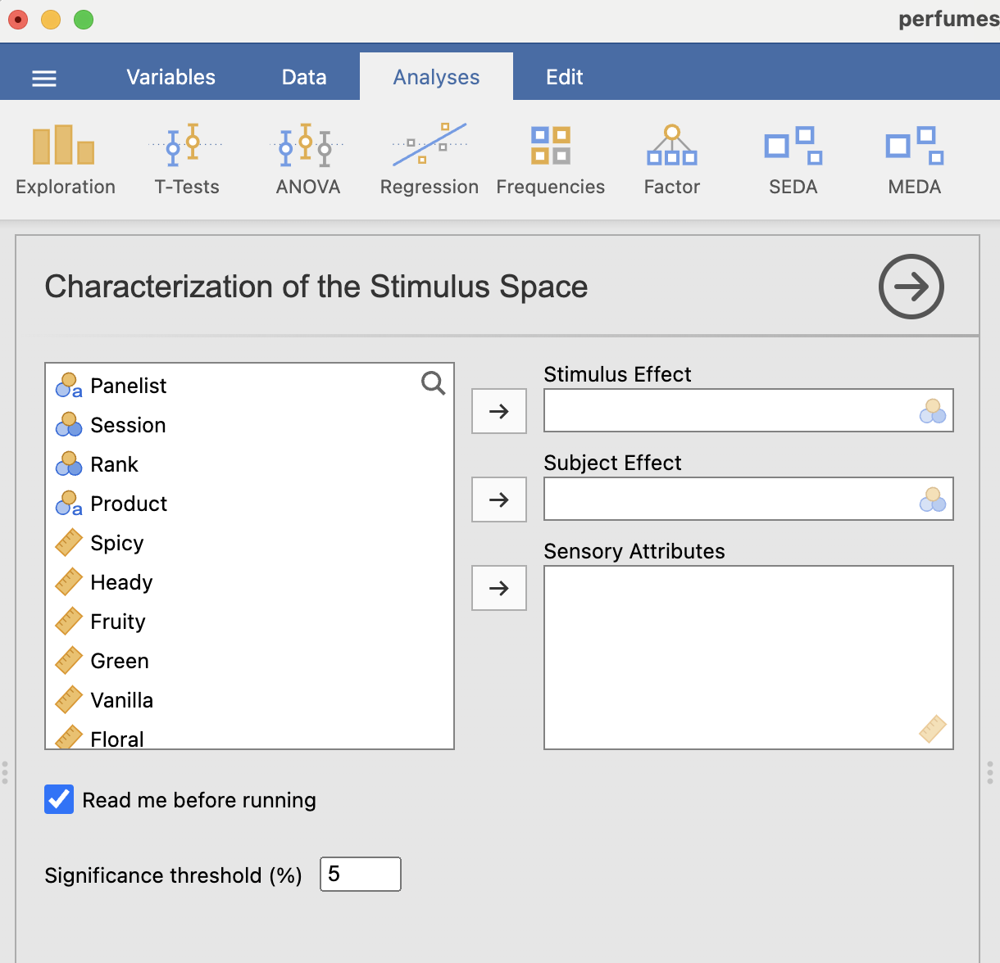
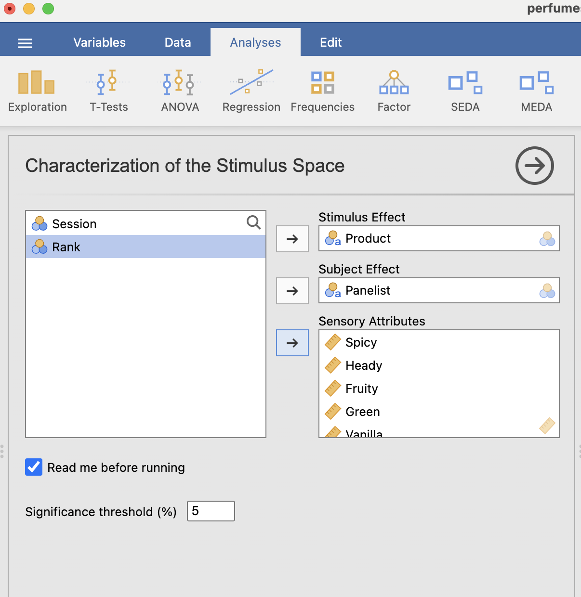
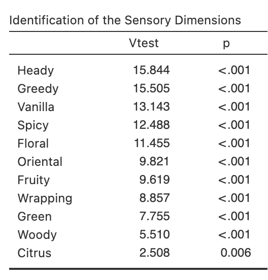
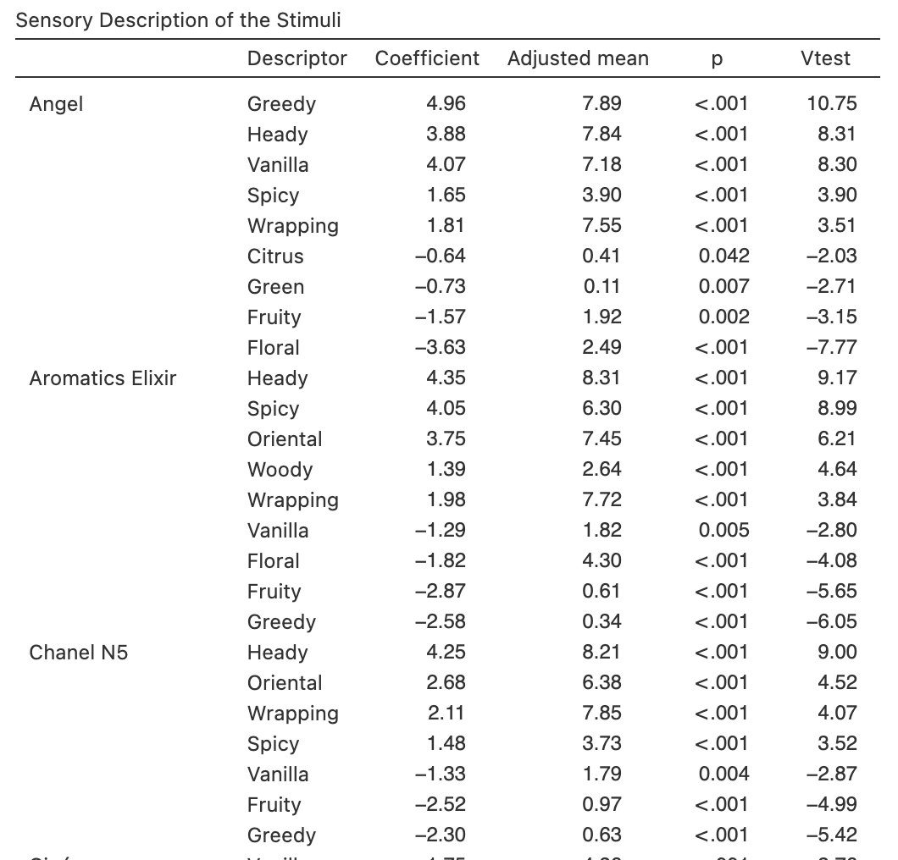

# Si non installé
# install.packages("readxl")
library(readxl)
qda_data <- read_excel(
path = "perfumes_qda.xlsx"
)Analyse univariée de données de type QDA (Quantitative Descriptive Analysis)
L’objectif de cette section est de vous aider à comprendre le fonctionnement des fonctions du module SEDA qui permettent de caractériser un espace produits à partir de données de type QDA.
Comme jamovi s’appuie sur R en arrière-plan, nous allons montrer comment reproduire directement ces résultats dans R.
Comprendre les données de type QDA avec R et le package SensoMineR
Les données de type QDA se présentent de la façon suivante (cf. Figure 1) : un premier ensemble de facteurs explicatifs de la variabilité des descripteurs sensoriels (Panelist, Session, Rank, Product), puis un ensemble de descripteurs sensoriels (à partir de Spicy). Ces données se trouvent dans le fichier perfumes_qda.xlsx.

Importons les données
Pour importer ces données, nous utilisons la fonction read_excel() du package readxl : R lit le fichier Excel et enregistre le résultat de la lecture dans un objet R appelé qda_data.
Si vous souhaitez vérifier que l’importation a bien été effectuée, vous pouvez simplement appeler l’objet qda_data en écrivant son nom.
qda_data# A tibble: 288 × 16
Panelist Session Rank Product Spicy Heady Fruity Green Vanilla Floral Woody
<chr> <dbl> <dbl> <chr> <dbl> <dbl> <dbl> <dbl> <dbl> <dbl> <dbl>
1 SO 1 1 Coco Ma… 0.6 0.7 7.1 0.8 2 8.6 0.7
2 SO 1 2 Lolita … 1.4 1.5 3.2 1.3 5.3 4.4 1.1
3 SO 1 3 Angel 3.8 9.7 1 0.6 1.9 3.6 0.6
4 SO 1 4 Pure Po… 1.1 1.2 7.4 0.2 2.5 9.5 0.8
5 SO 1 5 Chanel … 4.9 8.4 3 0.3 0.1 4.9 3.3
6 SO 1 6 Aromati… 8.6 10 0 0 3.1 5 1.2
7 SO 1 7 J'adore… 1.5 0 9.4 0.3 0.3 8.1 0.5
8 SO 1 8 Pleasur… 0.2 0.2 5.3 2.8 0.5 9.3 0.5
9 SO 1 9 J'adore… 0.5 0.4 9.6 0.3 0.5 7.5 0.5
10 SO 1 10 L'insta… 2 8 0.5 0.5 4 7 4
# ℹ 278 more rows
# ℹ 5 more variables: Citrus <dbl>, Marine <dbl>, Greedy <dbl>, Oriental <dbl>,
# Wrapping <dbl>La première ligne de la sortie indique que qda_data est un tibble, un format de données moderne et très pratique dans de nombreuses situations. Ici, pour rester dans un format très standard (et éviter de petites surprises dans certaines fonctions), nous convertissons l’objet en data frame1.
Transformons qda_data en un objet de type data frame avec la fonction as.data.frame() (et ré-enregistrons le résultat dans le même objet).
qda_data <- as.data.frame(qda_data)Jetons maintenant un coup d’œil à nos données avec la fonction summary().
summary(qda_data) Panelist Session Rank Product
Length:288 Min. :1.0 Min. : 1.00 Length:288
Class :character 1st Qu.:1.0 1st Qu.: 3.75 Class :character
Mode :character Median :1.5 Median : 6.50 Mode :character
Mean :1.5 Mean : 6.50
3rd Qu.:2.0 3rd Qu.: 9.25
Max. :2.0 Max. :12.00
Spicy Heady Fruity Green
Min. : 0.000 Min. : 0.000 Min. : 0.000 Min. :0.0000
1st Qu.: 0.000 1st Qu.: 0.300 1st Qu.: 0.500 1st Qu.:0.0000
Median : 0.500 Median : 1.900 Median : 2.300 Median :0.2000
Mean : 2.249 Mean : 3.963 Mean : 3.487 Mean :0.8458
3rd Qu.: 3.625 3rd Qu.: 8.125 3rd Qu.: 6.125 3rd Qu.:0.7000
Max. :10.000 Max. :10.000 Max. :10.000 Max. :9.8000
Vanilla Floral Woody Citrus
Min. : 0.000 Min. : 0.000 Min. :0.000 Min. :0.000
1st Qu.: 0.200 1st Qu.: 3.775 1st Qu.:0.000 1st Qu.:0.000
Median : 1.200 Median : 6.800 Median :0.500 Median :0.200
Mean : 3.113 Mean : 6.119 Mean :1.252 Mean :1.049
3rd Qu.: 6.000 3rd Qu.: 9.000 3rd Qu.:1.525 3rd Qu.:1.125
Max. :10.000 Max. :10.000 Max. :9.700 Max. :7.800
Marine Greedy Oriental Wrapping
Min. :0.0000 Min. : 0.000 Min. : 0.000 Min. : 0.000
1st Qu.:0.0000 1st Qu.: 0.100 1st Qu.: 0.100 1st Qu.: 2.775
Median :0.0000 Median : 1.000 Median : 1.200 Median : 6.300
Mean :0.4674 Mean : 2.924 Mean : 3.699 Mean : 5.737
3rd Qu.:0.2000 3rd Qu.: 5.100 3rd Qu.: 8.000 3rd Qu.: 8.900
Max. :9.5000 Max. :10.000 Max. :10.000 Max. :10.000 La sortie de summary() indique que les variables Panelist et Product sont de classe character (du texte). Elle indique aussi que les autres variables du jeu de données sont de classe numeric : ce sont des nombres réels (on peut calculer des indicateurs statistiques de base comme le minimum, les quartiles, le maximum).
Transformons les variables Panelist et Product en facteurs, puis vérifions.
qda_data$Panelist <- factor(qda_data$Panelist)
qda_data$Product <- factor(qda_data$Product)
summary(qda_data) Panelist Session Rank Product
CM : 24 Min. :1.0 Min. : 1.00 Angel : 24
CR : 24 1st Qu.:1.0 1st Qu.: 3.75 Aromatics Elixir : 24
GV : 24 Median :1.5 Median : 6.50 Chanel N5 : 24
MLD : 24 Mean :1.5 Mean : 6.50 Cinéma : 24
NMA : 24 3rd Qu.:2.0 3rd Qu.: 9.25 Coco Mademoiselle: 24
PR : 24 Max. :2.0 Max. :12.00 J'adore EP : 24
(Other):144 (Other) :144
Spicy Heady Fruity Green
Min. : 0.000 Min. : 0.000 Min. : 0.000 Min. :0.0000
1st Qu.: 0.000 1st Qu.: 0.300 1st Qu.: 0.500 1st Qu.:0.0000
Median : 0.500 Median : 1.900 Median : 2.300 Median :0.2000
Mean : 2.249 Mean : 3.963 Mean : 3.487 Mean :0.8458
3rd Qu.: 3.625 3rd Qu.: 8.125 3rd Qu.: 6.125 3rd Qu.:0.7000
Max. :10.000 Max. :10.000 Max. :10.000 Max. :9.8000
Vanilla Floral Woody Citrus
Min. : 0.000 Min. : 0.000 Min. :0.000 Min. :0.000
1st Qu.: 0.200 1st Qu.: 3.775 1st Qu.:0.000 1st Qu.:0.000
Median : 1.200 Median : 6.800 Median :0.500 Median :0.200
Mean : 3.113 Mean : 6.119 Mean :1.252 Mean :1.049
3rd Qu.: 6.000 3rd Qu.: 9.000 3rd Qu.:1.525 3rd Qu.:1.125
Max. :10.000 Max. :10.000 Max. :9.700 Max. :7.800
Marine Greedy Oriental Wrapping
Min. :0.0000 Min. : 0.000 Min. : 0.000 Min. : 0.000
1st Qu.:0.0000 1st Qu.: 0.100 1st Qu.: 0.100 1st Qu.: 2.775
Median :0.0000 Median : 1.000 Median : 1.200 Median : 6.300
Mean :0.4674 Mean : 2.924 Mean : 3.699 Mean : 5.737
3rd Qu.:0.2000 3rd Qu.: 5.100 3rd Qu.: 8.000 3rd Qu.: 8.900
Max. :9.5000 Max. :10.000 Max. :10.000 Max. :10.000
Les variables Panelist et Product sont maintenant considérées comme des facteurs.
Réalisons une analyse de variance avec la fonction LinearModel() du package FactoMineR
Dans cette section, nous cherchons à expliquer la variabilité de l’attribut sensoriel Heady à partir des variables Product et Panelist. Autrement dit : les différences de notes observées sur cet attribut proviennent-elles principalement des produits testés, des panélistes, ou des deux ?
Pour répondre à cette question, nous la reformulons sous la forme d’une hypothèse testable, ce qui nous amène à considérer un modèle statistique permettant de quantifier l’effet de chaque facteur. Pour commencer simplement, nous utilisons ici un modèle à deux facteurs (produit + panéliste), sans inclure Session ni interaction :
\[ Attribut \sim Produit + Juge \]
Ce modèle exprime l’idée que les notes attribuées à l’attribut Heady dépendent d’un effet produit (certains produits étant perçus comme plus entêtants que d’autres) et d’un effet panéliste (chaque panéliste pouvant avoir une échelle de notation ou une sensibilité différente).
Nous allons donc tester ce modèle à l’aide d’une analyse de la variance (ANOVA), afin de déterminer dans quelle mesure chacun de ces facteurs contribue à la variabilité observée (celle des notes).
Pour cela, nous utilisons la fonction LinearModel() du package FactoMineR et stockons le résultat dans un objet que nous nommons res_lm.
# Si non installé
# install.packages("FactoMineR")
library(FactoMineR)
res_lm <- LinearModel(
Heady ~ Product + Panelist,
data = qda_data
)L’objet res_lm est une liste composée de plusieurs composantes. Pour en connaître les noms, on applique la fonction names().
names(res_lm)[1] "Ftest" "Ttest" "call" "lmResult"Jetons un coup d’œil à la composante qui contient les résultats globaux du modèle, notamment le F-test permettant d’évaluer la significativité des effets principaux.
res_lm$Ftest SS df MS F value Pr(>F)
Product 2639.40 11 239.946 48.1547 < 2.2e-16 ***
Panelist 390.55 11 35.504 7.1253 1.334e-10 ***
Residuals 1320.44 265 4.983
---
Signif. codes: 0 '***' 0.001 '**' 0.01 '*' 0.05 '.' 0.1 ' ' 1Les effets principaux Product et Panelist sont significatifs : cela signifie que les différences observées sur l’attribut Heady proviennent à la fois des produits testés et des panélistes.
Se pose maintenant une autre question : quel est le produit le plus entêtant ? Pour répondre à ce type de question, on observe les résultats au niveau des modalités (produits), en écrivant le modèle sous une forme plus explicite :
\[ Y_{ij} = \mu + \alpha_i + \beta_j + \epsilon_{ij}, \]
où \(Y_{ij}\) est la note de l’attribut Heady donnée par le panéliste \(j\) pour le produit \(i\), \(\mu\) est la moyenne générale, \(\alpha_i\) est l’effet du produit \(i\), \(\beta_j\) est l’effet du panéliste \(j\), et \(\epsilon_{ij}\) est le résidu (c’est-à-dire ce qui n’est pas expliqué par le modèle).
Les coefficients du modèle sont estimés avec la contrainte suivante :
\[ \sum_{i=1}^{I} \alpha_i = 0, \]
où \(I\) est le nombre de produits évalués.
La caractérisation d’un produit repose sur le test de significativité du coefficient \(\alpha_i\) par rapport à 0 : si \(\alpha_i\) est significativement supérieur à 0, cela indique que le produit \(i\) est perçu comme plus entêtant que la moyenne (toutes choses égales par ailleurs, dans ce paramétrage).
Regardons maintenant les résultats au niveau des modalités (t-test), c’est-à-dire l’estimation des paramètres du modèle.
res_lm$Ttest Estimate Std. Error t value Pr(>|t|)
(Intercept) 3.9628472 0.1315349 30.1277351 1.441547e-87
Product - Angel 3.8788194 0.4362518 8.8912409 9.571740e-17
Product - Aromatics Elixir 4.3454861 0.4362518 9.9609596 4.648471e-20
Product - Chanel N5 4.2496528 0.4362518 9.7412852 2.302015e-19
Product - Cinéma -1.7670139 0.4362518 -4.0504453 6.718803e-05
Product - Coco Mademoiselle -2.8211806 0.4362518 -6.4668635 4.795420e-10
Product - J'adore EP -2.7836806 0.4362518 -6.3809039 7.818172e-10
Product - J'adore ET -2.6753472 0.4362518 -6.1325764 3.127825e-09
Product - L'instant -1.6795139 0.4362518 -3.8498731 1.482103e-04
Product - Lolita Lempicka 0.4454861 0.4362518 1.0211675 3.081064e-01
Product - Pleasures -3.0503472 0.4362518 -6.9921718 2.199124e-11
Product - Pure Poison -2.0670139 0.4362518 -4.7381216 3.521664e-06
Product - Shalimar 3.9246528 0.4362518 8.9963025 4.610304e-17
Panelist - CM -0.1836806 0.4362518 -0.4210426 6.740653e-01
Panelist - CR -1.3086806 0.4362518 -2.9998287 2.958454e-03
Panelist - GV -0.3711806 0.4362518 -0.8508403 3.956262e-01
Panelist - MLD 0.3788194 0.4362518 0.8683505 3.859882e-01
Panelist - NMA 2.8454861 0.4362518 6.5225780 3.484982e-10
Panelist - PR 0.6538194 0.4362518 1.4987205 1.351364e-01
Panelist - RL -0.6378472 0.4362518 -1.4621081 1.448965e-01
Panelist - SD 0.8079861 0.4362518 1.8521097 6.512214e-02
Panelist - SM 0.4371528 0.4362518 1.0020654 3.172261e-01
Panelist - SO 0.1121528 0.4362518 0.2570827 7.973144e-01
Panelist - SQ -1.9670139 0.4362518 -4.5088962 9.793242e-06
Panelist - ST -0.7670139 0.4362518 -1.7581909 7.986941e-02La colonne Estimate correspond à l’estimation des paramètres du modèle (les \(\alpha_i\) et les \(\beta_j\)). Le produit perçu comme le plus entêtant est celui dont l’estimation est la plus élevée. Dans notre exemple, il s’agit du parfum Aromatics Elixir.
Réalisons automatiquement des analyses de variance avec la fonction decat() du package SensoMineR
La fonction decat() est une fonction clé du package SensoMineR (et celle qui est implémentée dans l’interface jamovi via le module SEDA). Elle réalise une analyse de la variance pour l’ensemble des attributs sensoriels, en utilisant un modèle spécifié par l’utilisateur, puis fournit les résultats nécessaires à l’interprétation des différences entre les produits.
Il est important de placer l’effet produit en premier dans la formule du modèle, afin que les sorties soient correctement orientées vers l’interprétation “produit”.
La fonction decat() génère des résultats numériques détaillés et deux représentations graphiques principales : la première concerne le F-test (effet global du produit pour chaque attribut), la seconde concerne le t-test (différences au niveau des produits).
# Si non installé
# install.packages("SensoMineR")
library(SensoMineR)
res_decat <- decat(
qda_data,
formul = "~Product+Panelist",
firstvar = 5
)

Comme dans l’exploration d’un modèle d’ANOVA classique, nous obtenons une première figure exprimant un résultat plus “macro” (au niveau des attributs sensoriels) et une seconde exprimant un résultat plus “micro” (au niveau des produits).
Sur la première figure, les attributs sont triés de la plus significative à la moins significative selon l’effet Product. Dans notre exemple, Heady est un attribut très discriminant.
Sur la seconde figure, on visualise les principales différences entre produits : les produits et les attributs sont triés (bleu si \(\alpha_i > 0\) de manière significative, rouge si \(\alpha_i < 0\)).
Regardons maintenant les indicateurs numériques en affichant les noms des objets qui consituent res_decat.
names(res_decat)[1] "tabF" "tabT" "coeff" "adjmean" "resF" "resT" Le résultat principal est la description automatique de chaque produit, que l’on retrouve dans res_decat$resT. Cet objet est lui-même une liste.
names(res_decat$resT) [1] "Angel" "Aromatics Elixir" "Chanel N5"
[4] "Cinéma" "Coco Mademoiselle" "J'adore EP"
[7] "J'adore ET" "L'instant" "Lolita Lempicka"
[10] "Pleasures" "Pure Poison" "Shalimar" Jetons un coup d’œil aux parfums Angel et Coco Mademoiselle, par exemple.
res_decat$resT$Angel Coeff Adjust mean P-value Vtest
Greedy 4.9638889 7.8875000 5.706734e-27 10.753480
Heady 3.8788194 7.8416667 9.571740e-17 8.309981
Vanilla 4.0701389 7.1833333 1.023563e-16 8.302020
Spicy 1.6506944 3.9000000 9.545053e-05 3.901875
Wrapping 1.8131944 7.5500000 4.422015e-04 3.513526
Citrus -0.6406250 0.4083333 4.194330e-02 -2.034082
Green -0.7333333 0.1125000 6.804738e-03 -2.706252
Fruity -1.5659722 1.9208333 1.659853e-03 -3.145179
Floral -3.6270833 2.4916667 7.646973e-15 -7.773296Comme vous pouvez le constater, la valeur associée à Heady est cohérente avec celle obtenue via le premier modèle pour la modalité correspondant à Angel (même logique de paramétrage et de test).
res_decat$resT$`Coco Mademoiselle` Coeff Adjust mean P-value Vtest
Floral 1.856250 7.975000 3.352149e-05 4.148121
Fruity 1.575694 5.062500 1.554342e-03 3.164342
Vanilla -1.163194 1.950000 1.171424e-02 -2.520638
Spicy -1.336806 0.912500 1.496187e-03 -3.175422
Heady -2.821181 1.141667 4.795420e-10 -6.225657Comprendre les résultats dans jamovi (module SEDA)
Dans le cadre des données QDA, les produits sont décrits à partir d’une liste d’attributs sensoriels définie a priori. Dans un premier temps, nous analysons l’espace produits dans sa globalité, puis nous nous concentrons sur chaque produit individuellement à travers des indicateurs numériques issus de l’analyse de la variance. Ensuite, nous visualiserons ces informations à l’aide de l’analyse en composantes principales (ACP), dans le chapitre suivant.
Importons les données

Footnotes
Pour manipuler des variables catégorielles de façon plus “tidy”, vous pouvez consulter https://forcats.tidyverse.org. Pour les rownames des tibbles, voir https://tibble.tidyverse.org/reference/rownames.html.↩︎
Comment le module SEDA caractérise-t-il un espace produits ?
Analyses de données univariées : ANOVA
La fonction dédiée à la caractérisation de l’espace produits génère deux types de résultats : le premier concerne les attributs sensoriels dans leur ensemble, tandis que le second s’intéresse à chaque produit individuellement.
Le premier résultat met en évidence les descripteurs sensoriels caractéristiques de l’espace produits : il identifie les attributs pour lesquels l’effet Produit est significatif, à partir du modèle d’ANOVA à deux facteurs :
\[ Attribut \sim Produit + Juge \]
Le second résultat fournit une description individuelle de chaque produit. Cette description repose sur le même modèle, qui peut s’écrire de façon plus formelle :
\[ Y_{ij} = \mu + \alpha_i + \beta_j + \epsilon_{ij}, \]
avec la contrainte :
\[ \sum_{i=1}^{I} \alpha_i = 0, \]
où \(I\) est le nombre de produits évalués.
La caractérisation d’un produit repose sur le test de significativité du coefficient \(\alpha_i\) par rapport à 0.
En pratique, pour caractériser un espace produits et chacun de ses produits, il faut renseigner l’effet Produit, l’effet Juge, ainsi que les attributs sensoriels d’intérêt (cf. Figure 3). Par défaut, les tests de significativité se font au seuil de 5 %.

Une fois les sources de variabilité et les variables à expliquer identifiées (cf. Figure 4), la fonction réalise autant d’analyses de variance qu’il y a d’attributs sensoriels. Chaque attribut est expliqué par l’effet Produit et l’effet Juge, avec un intérêt particulier porté aux résultats associés à l’effet Produit.

La fonction fournit une liste ordonnée des attributs sensoriels qui caractérisent l’espace produits, c’est-à-dire ceux pour lesquels l’effet Produit est significatif (cf. Figure 5).

Pour chaque attribut, la valeur affichée dans la colonne p correspond à la p-valeur du test de l’effet Produit. Ce test évalue si les produits ont été perçus comme identiques ou si au moins l’un d’eux a été perçu comme différent des autres. Les attributs sont rangés par p-valeur croissante, du plus discriminant au moins discriminant.
La fonction fournit également une description de chaque produit en fonction des attributs sensoriels qui le caractérisent : ce sont les attributs pour lesquels le test d’hypothèse \(H_0 : \alpha_i = 0\) versus \(H_1 : \alpha_i \neq 0\) conduit au rejet de \(H_0\) (cf. Figure 6). Pour chaque produit, la fonction affiche les attributs dont la p-valeur du test de significativité du coefficient \(\alpha_i\) est inférieure à 0.05. Les attributs sont rangés par ordre de p-valeur croissante lorsque \(\alpha_i > 0\), et par ordre de p-valeur décroissante lorsque \(\alpha_i < 0\).

Ainsi, certains parfums se distinguent par des attributs significativement plus élevés (ou plus faibles) que la moyenne : par exemple, un parfum peut être caractérisé par des notes d’“entêtant” (
Heady) significativement supérieures à la moyenne, tandis qu’un autre peut l’être par des valeurs significativement inférieures.